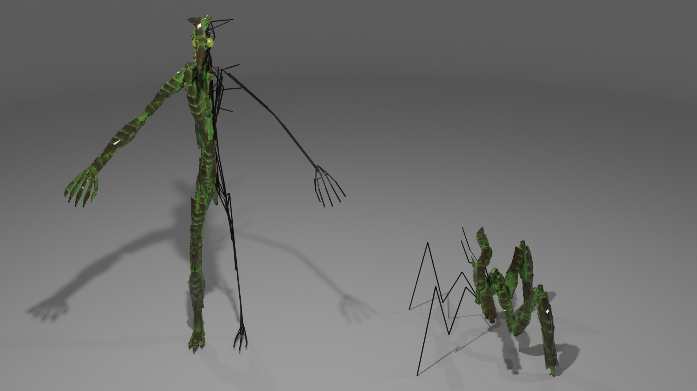

Resources created by me:

Contains a small blender scene, with a setup of nodes and modifiers to quickly prototype creatures (and objects too, I guess). Uses collections of minimal detailed objects to kitbash objects.
Made with Blender 3.4

A small selection of surface effects created by me, to be used with Curtis Holt' BY-GEN-Blender addon. Features five additional surface effects: Bismuth, Crystallized, RoughStone, Trypo & Trypo_2.
Made with Blender 3.4